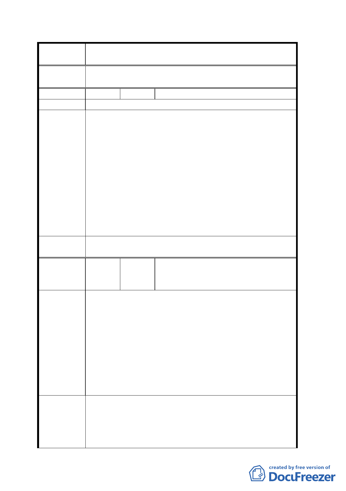

案
名
變更臺北市文山區萬隆段二小段瀝青拌合場用地及住宅區
（專案國宅用地）為學校用地計畫案
擬建議處理
意見
同意撤回計畫案。
編 號 ８ 陳情人 黃逢廣
陳 情 理 由 同編號７。
一、教育局應先檢討全市學校用地，選擇兩、三處，並借
鏡高雄市「瑞平中學」設在人口稀少之地點（遠離住
宅區）。
二、依照都市計畫法二十六條及同法三十四條，本地區則
建議辦法
不應設校，且依據教育局對新聞界表示：「學校設備完
善、管理嚴格…等」，本市十二個行政區均歡迎其設
校，不必堅持設在萬隆段呀！
三、請參照居民提供之意見，依據法理，檢討市屬學校用
地或再擴大舉辦公聽會，並廣邀都市計畫專家、民意
代表、新聞媒體等，選在溪口或志清國小，請教育局
要攜帶評估資料發給「與會人士」參閱，以求適法處
理。
擬建議處理
意見
同意撤回計畫案。
陳振明里長、張振東里長、張耿暉理事
編 號 ９ 陳情人 長、林寬培理事長、李田素英理事長（連
署人共一五一人）
一、變更為學校用地，擬用來設立「中途學校—文心中學」，
附近居民強烈反對，已對馬市長、教育局、議員諸公
暨立法委員陳情在案。
二、教育局設置選址無任何專家「評估報告」，僅是敷衍塞
陳情理由
責交差即可，未見有辦教育絲毫之良心，更罔顧社區
居民之權益與社區之發展，本社區里民矢志不移反對
到底。
三、中途學校管理辦法未出爐，即急切選址設立學校，將
來管理必會有疏失，居民有安全之虞慮；未見有認同
肯定的管理辦法設立，本社區居民反對到底。
教育局先前承諾會再次舉辦「說明會」，會辦理里民意見調
查暨歷經數次溝通陳情，教育局均不予理會與回應；今據
建 議 辦 法 聞又向都市發展局聲稱已和社區居民溝通，欲以暗渡陳倉
方式先行變更使用分區，為其設校鋪路；真是缺乏「誠信」，
此種為達目的不擇手段、寡廉鮮恥的蠻橫行為，本社區唯
九